Data Cleaning
- Removed duplicate records
- Converted columns to appropriate data types
- Standardized string values
- Removed non-sale records
- Excluded non-transaction product codes
- Removed 4 extreme-quantity records forming 2 cancellation pairs, which substantially compressed the distribution of the remaining observations
- Created analytical features
Clean sales dataset: 522,707 records
Cancellation records: 8,668 records
Customer-level analysis:Restricted to records with a non-missing CustomerID — 391,281 records
Exploratory Data Analysis
What does the distribution of quantity, unit price, and revenue look like across orders?
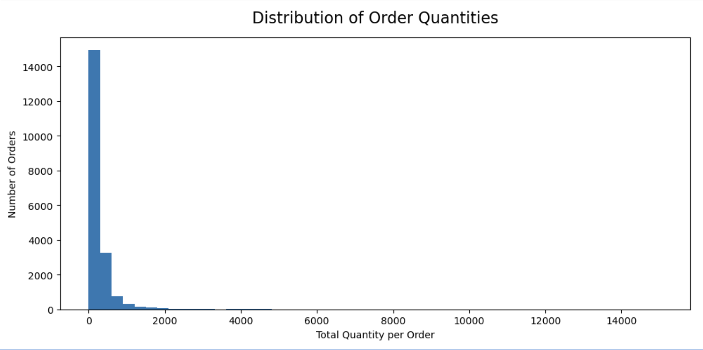
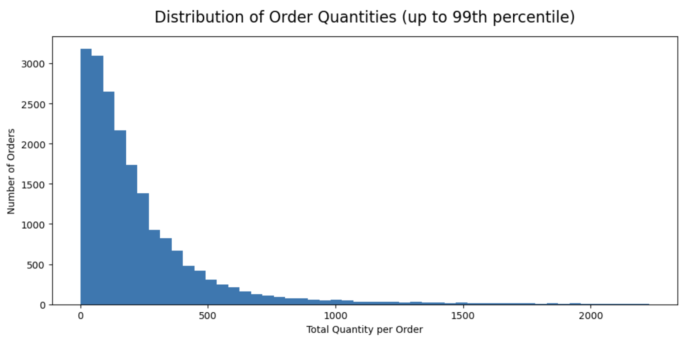
Order quantity is highly right-skewed. Most orders contain relatively small quantities, while a small proportion of orders have substantially larger quantities. The full distribution contains extreme orders reaching approximately 15,000 units, which compresses the majority of observations near the lower end of the scale.
Limiting the visualization to the 99th percentile reveals the distribution more clearly and shows that it remains strongly right-skewed, with most orders concentrated at lower quantities and a small number of orders exceeding 2,000 units. This suggests the presence of substantial variability in order size and a long tail of potentially large or bulk orders.
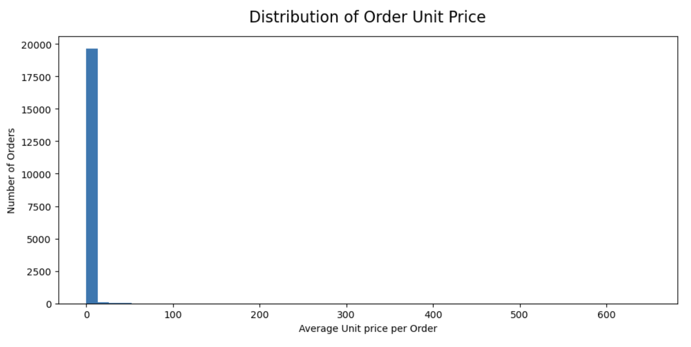
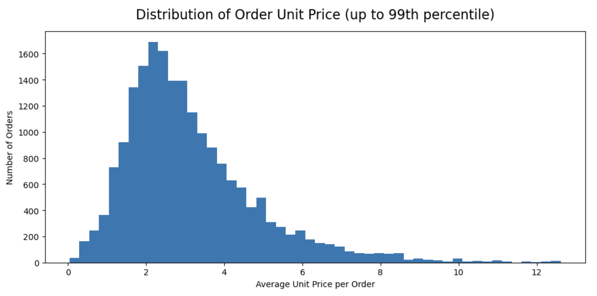
The average unit price per order is unimodal and right-skewed. Most orders have relatively low average unit prices, with the highest concentration occurring around $2–$3. The frequency decreases as average unit price increases, producing a long right tail.
Even after excluding the top 1% of observations, the distribution remains right-skewed, with some orders having average unit prices above $10. This indicates that most orders consist of relatively low-priced items, while a smaller number of orders contain higher-priced products.
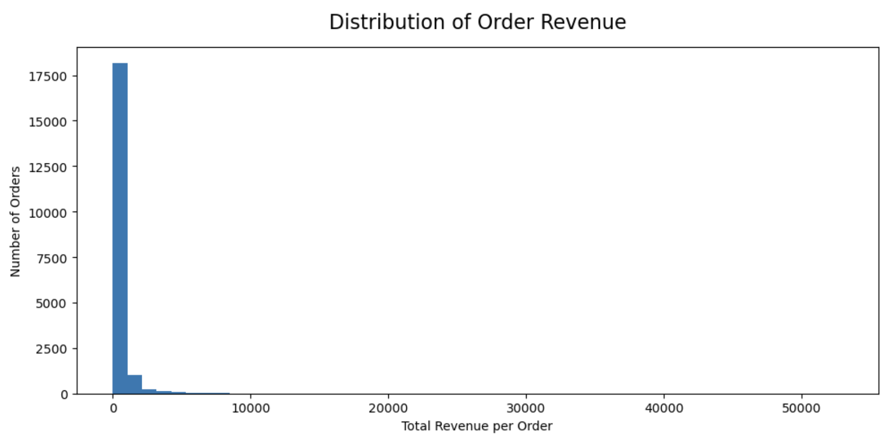
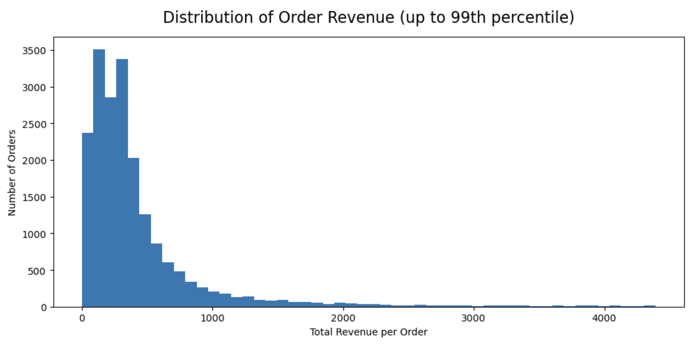
The order-revenue distribution is strongly right-skewed. Most orders have relatively low revenue, while a small number of orders have exceptionally high revenue, creating a long right tail. In the original distribution, extreme orders extend above $50,000.
After removing the top 1% of orders by revenue, the extreme values are reduced substantially, but the distribution remains right-skewed, with the tail extending beyond approximately $4,000.
What are the top 10 products by revenue?
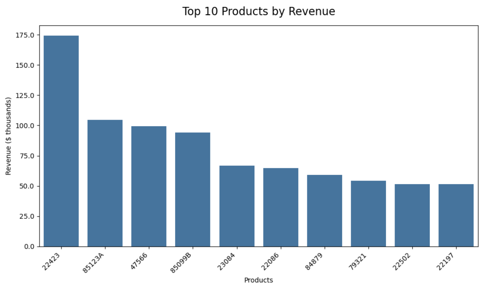
Top 10 Products by Revenue — identifies the products contributing the most revenue.
What are the top 10 products by quantity?
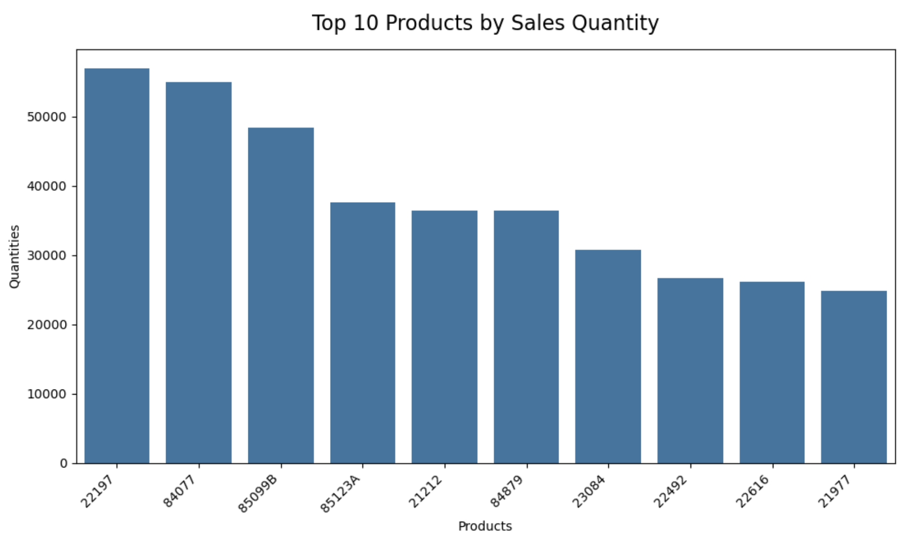
Top 10 Products by Quantity — identifies the products selling the highest volume.
How do the top products compare when looking at both revenue and quantity together?
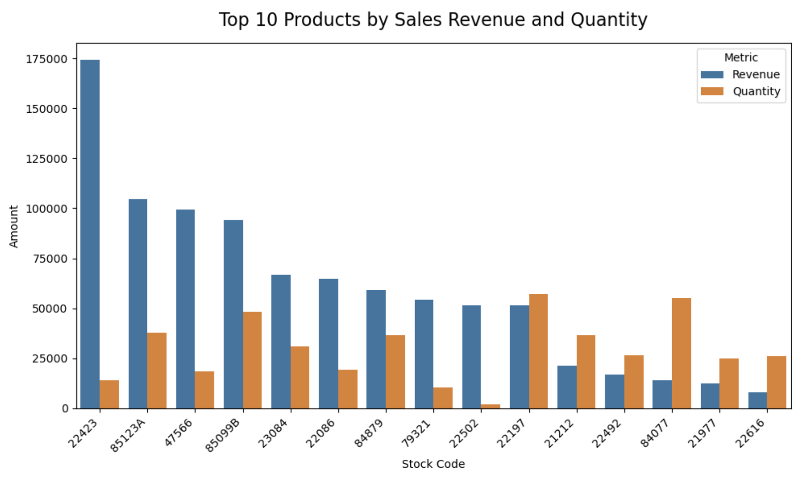
Top 10 Products by Revenue and Quantity (Comparison) — combines the products from both top-10 lists to compare their revenue and sales volume side by side.
The comparison shows an important distinction: a product generating high revenue does not necessarily sell in high volume, and a product selling in high volume does not necessarily generate high revenue. The relationship between these two measures is largely influenced by the unit price of each stock code.
Which countries generated the most revenue?
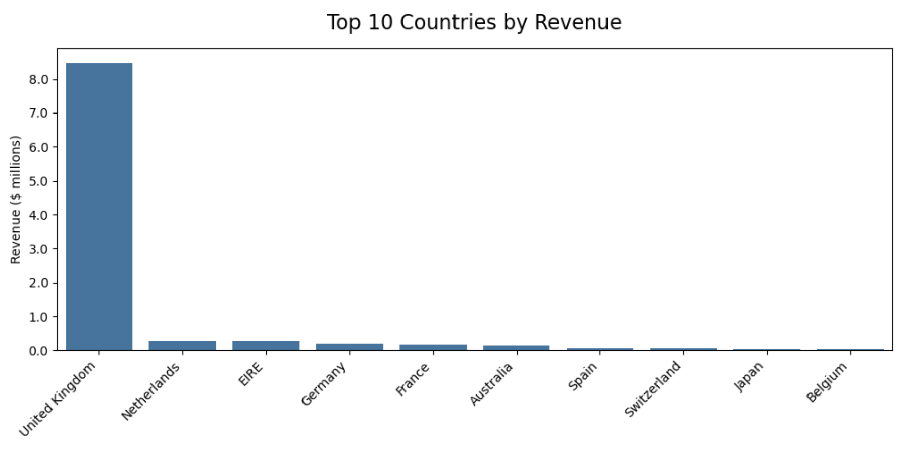
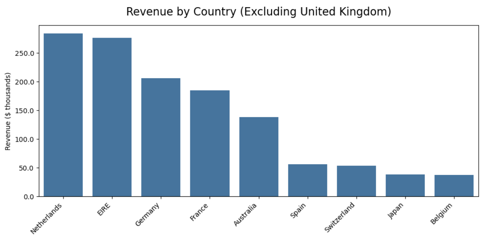
The United Kingdom dominates revenue generation in the dataset. Its total revenue is approximately 6.67 times greater than the combined revenue of the next nine countries.
The difference is particularly substantial when compared with individual countries: the UK generates approximately 30 times the revenue of the Netherlands and around 230 times the revenue of Belgium.
Finding: Revenue is highly concentrated in the UK, suggesting that the business has a very strong dependence on this market.
How is customer spending distributed?
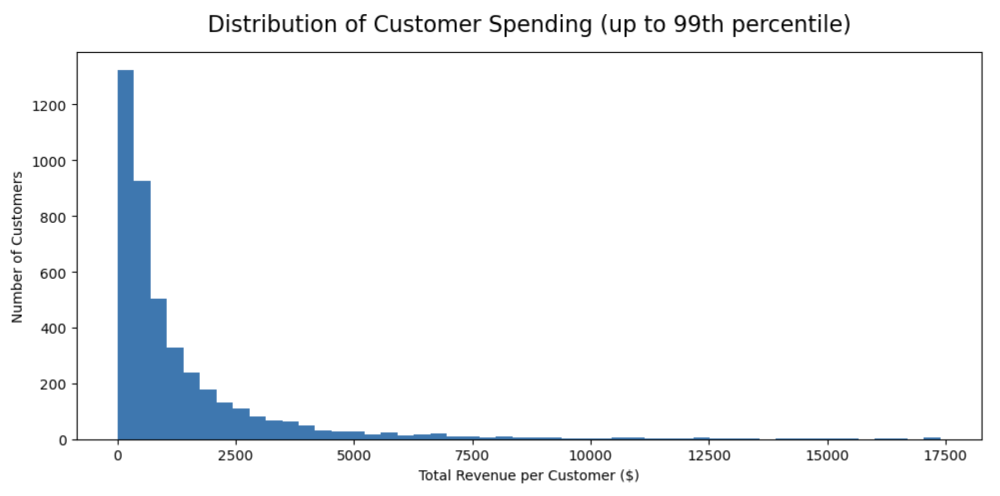
Customer spending is strongly right-skewed. Among 99% of customers, total spending is $17,569.45 or less, indicating that most customers have relatively low spending. A small proportion of customers spend substantially more, creating a long right tail. The full distribution shows that the highest-spending customer generated approximately $279 thousand in total revenue.
How concentrated is customer spending?
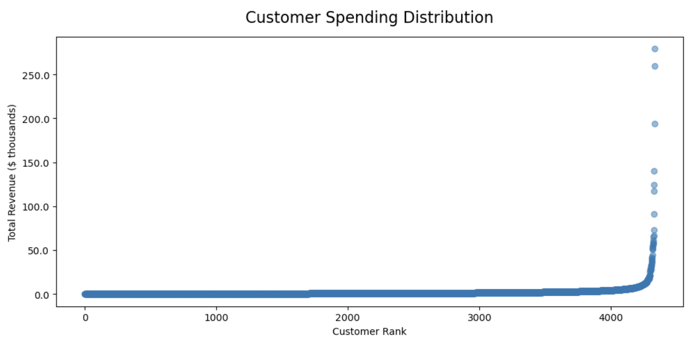
Customer spending is highly concentrated, with most customers generating relatively low revenue and a small number of customers generating exceptionally high revenue. The highest-spending customer generated approximately $279 thousand in revenue. The top 40 highest-spending customers account for 31.91% of total revenue.
Business Analysis
When does the business perform well, and what does overall performance look like?
KPI Overview
- Average order value: £506.19
- Average revenue per customer: £1961.29
- Average items per order: 273
Insight: The business generates relatively high-value and high-volume transactions, with customers contributing substantially more than a single average order.
Order Trend
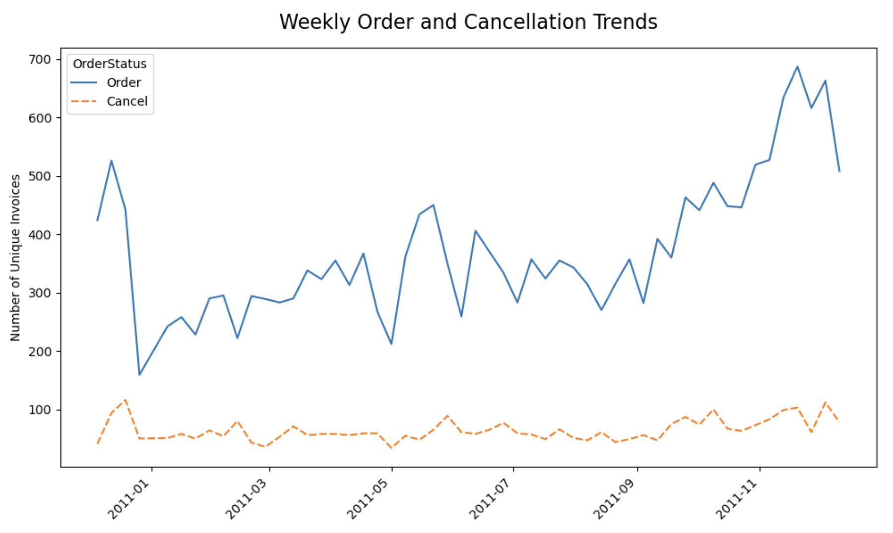
Insight: The business exhibits strong seasonality, with demand accelerating significantly toward the end of the year.
Cancellation & Net Revenue
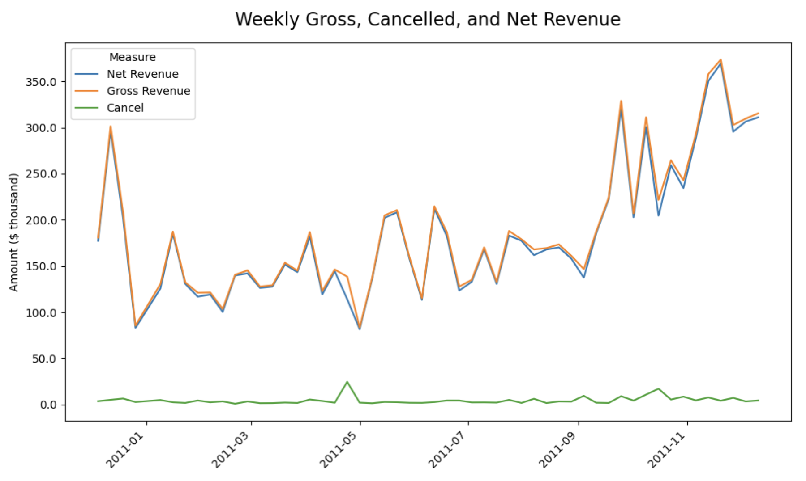
Insight: Revenue growth is closely associated with increased order activity, suggesting that transaction volume is a major driver of revenue performance. Cancellations do not appear to be the primary factor determining overall revenue performance.
Revenue Trend
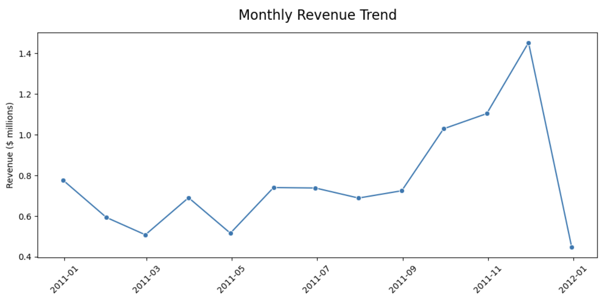
Revenue declines sharply in December; however, this should be interpreted cautiously because the dataset contains only a partial December period. Therefore, the decline cannot be confidently interpreted as a deterioration in underlying demand.
What is driving the Q4 increase?
The Q4 increase is primarily associated with higher order activity. Order volume and revenue rise together from September through November, indicating that increased transaction volume is a key driver of the revenue uplift.
Overall Business Insight
The business is seasonal, the observed Q4 period is strongest, particularly September–November. Revenue is closely tied to order activity, transactions are relatively large, and cancellations do not materially alter the overall revenue picture. The strong increase in orders and revenue from September through November suggests that increased transaction volume is the primary driver of the Q4 uplift. The apparent December decline should be interpreted cautiously because the dataset contains only a partial December period.
Order-Level Analysis
What does a typical order look like?
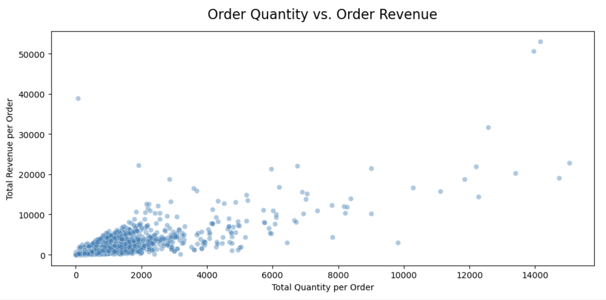
orders are relatively small, with total quantities generally below 3,500 units and total revenue below 10,000. The observations are heavily concentrated in the lower-left portion of the scatter plot, indicating that high-volume, high-revenue orders are relatively uncommon.
There are some orders with quantities between roughly 3,500 and 10,000 units, but many of these still generate less than 10,000 in revenue. This suggests that order quantity alone does not determine revenue; differences in the products purchased and their revenue per unit likely contribute to the variation in revenue.
A small number of outliers have either unusually high quantities, unusually high revenue, or both. For example, some orders with quantities around 14,000 units generate more than 50,000 in revenue. These outliers may represent bulk purchases or orders containing higher-value products and could warrant further investigation.
Overall, the order-level analysis shows that most orders are relatively small, while a small number of high-volume and high-revenue orders create substantial variation. Total quantity is the strongest variable associated with total revenue (r = 0.81), whereas average revenue per unit has little linear relationship with order quantity or total revenue. The near-perfect correlation between DistinctProducts and OrderLines also suggests that these variables contain highly overlapping information and may not both be necessary in subsequent modeling or analysis.
Correlation between variables
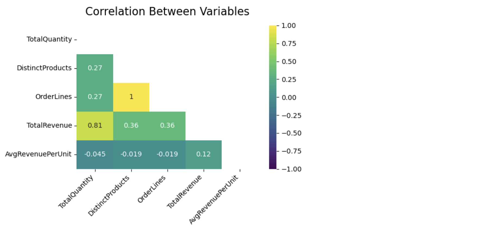
TotalQuantity and TotalRevenue have a strong positive correlation (r = 0.81). This indicates that orders with larger quantities generally tend to generate higher total revenue. However, the relationship is not perfect, meaning that factors such as the products purchased and revenue per unit also influence total revenue.
DistinctProducts and OrderLines have an extremely strong positive correlation (r = 0.99). This suggests that the number of distinct products in an order and the number of order lines are almost perfectly aligned in this dataset. This may indicate that most product types appear on only one order line, making these two variables largely redundant for some analyses.
AvgRevenuePerUnit and TotalQuantity have essentially no linear correlation (r = -0.045). This suggests that larger orders do not systematically have higher or lower average revenue per unit. In other words, purchasing more units does not appear to substantially affect the average revenue generated per unit.
AvgRevenuePerUnit and TotalRevenue have a very weak positive correlation (r = 0.12). Although there is a slight positive relationship, average revenue per unit by itself is not a strong predictor of total order revenue. Total quantity appears to be much more strongly associated with total revenue.
Overall, the order-level analysis shows that most orders are relatively small, while a small number of high-volume and high-revenue orders create substantial variation. Total quantity is the strongest variable associated with total revenue (r = 0.81), whereas average revenue per unit has little linear relationship with order quantity or total revenue. The near-perfect correlation between DistinctProducts and OrderLines also suggests that these variables contain highly overlapping information and may not both be necessary in subsequent modeling or analysis.
Customer-Level Analysis
How do customers behave and contribute to revenue?
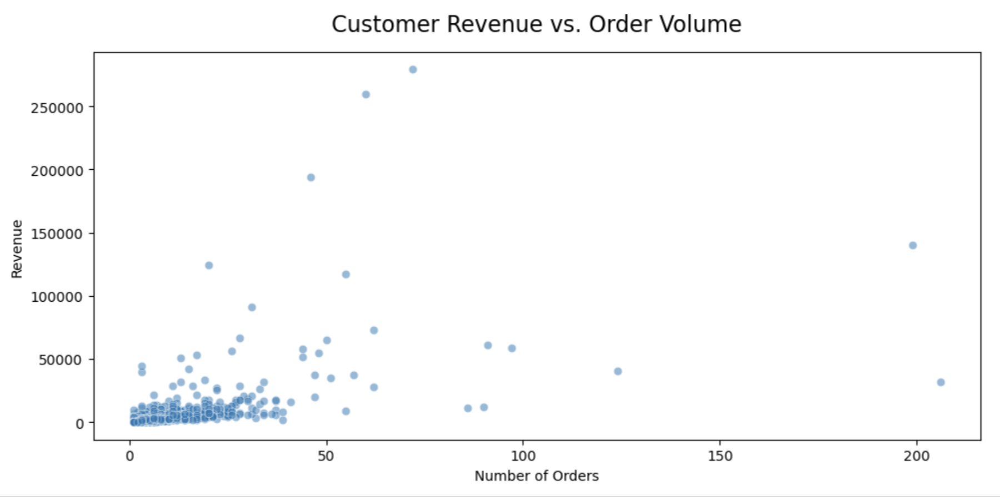
Most customers place relatively few orders and generate relatively low total revenue. The majority of customers are concentrated below approximately 40 orders and 20,000 in total revenue. However, there is considerable variation among customers, with a smaller number of customers spread across higher order volumes and higher revenue levels. A few customers stand out as clear high-value outliers, generating substantially more revenue or placing substantially more orders than the typical customer.
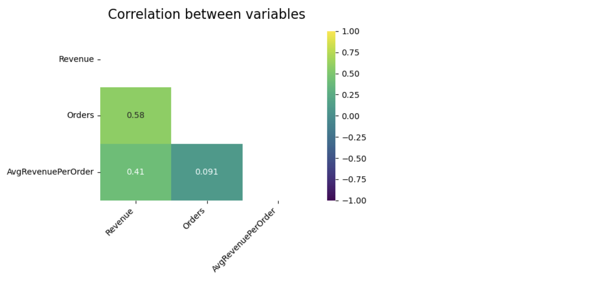
There is a moderate positive correlation between Revenue and the number of Orders (r = 0.58). This indicates that customers who place more orders generally tend to generate higher total revenue. However, the relationship is not strong enough to suggest that order frequency alone determines customer revenue.
The correlation corresponds to an R² of approximately 33.7%, meaning that about 33.7% of the variation in customer revenue is explained by the linear relationship between the number of orders and revenue. The remaining variation is likely related to other factors, such as the value of products purchased or the average revenue generated per order.
There is a moderate-to-weak positive correlation between Revenue and Average Revenue per Order (r = 0.41). This suggests that customers with a higher average revenue per order tend to generate higher total revenue. However, the relationship is not particularly strong, indicating that having a high-value average order does not necessarily result in the highest total customer revenue.
An R² of approximately 16.8% indicates that average revenue per order explains about 16.8% of the variation in total customer revenue through a linear relationship.
There is essentially no linear correlation between the number of Orders and Average Revenue per Order (r = 0.09). This suggests that customers who place more orders do not necessarily have higher or lower average revenue per order. In other words, order frequency and average order value appear to be largely independent in this dataset.
Overall, the customer-level analysis shows that most customers place relatively few orders and generate relatively low total revenue, while a small number of customers contribute disproportionately higher revenue. Revenue has a moderate positive correlation with the number of orders (r = 0.58) and a weaker positive correlation with average revenue per order (r = 0.41). This suggests that both order frequency and average order value are associated with customer revenue, although neither factor alone fully explains differences in customer value. Interestingly, the correlation between orders and average revenue per order is very weak (r = 0.09), indicating that customers who order more frequently do not necessarily spend more or less per order.
RFM Analysis
Which customers are most valuable, recent, and engaged?

RFM analysis evaluates customers based on three key dimensions:
- Recency (R): how recently customers purchased; lower is better
- Frequency (F): how often they purchase; higher is better
- Monetary (M): how often they purchase; a higher value indicates greater customer value.
The RFM table provides the foundation for customer segmentation. Customers are subsequently grouped into meaningful segments based on their RFM characteristics, allowing the business to distinguish highly valuable and engaged customers from new, at-risk, and inactive customers.
Customer Segments Analysis
How can customers be grouped into actionable business segments?
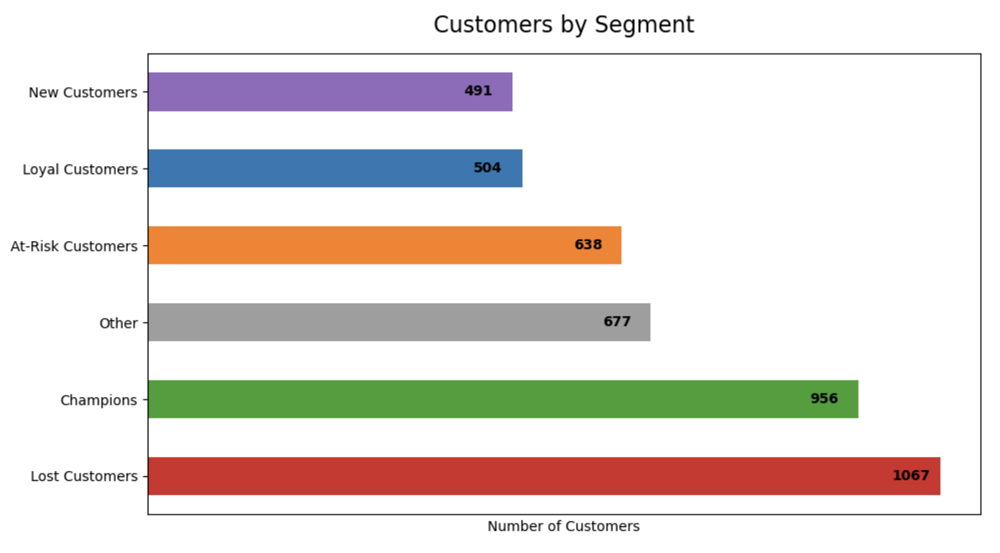
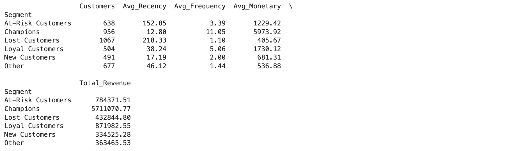
The Lost Customers segment contains the largest number of customers, with 1,067 customers, followed by Champions with 956 and Other with 677. Despite having the largest customer count, Lost Customers generate only $432,844.80 in revenue, ranking fourth among the six segments. Their revenue represents approximately 5.1% of the combined revenue generated by all six customer segments.
This contrast between customer volume and revenue contribution is important. A large number of Lost Customers does not necessarily translate into high revenue, as their average frequency (1.10 purchases) and average monetary value ($405.67) are relatively low. This segment may therefore represent an opportunity for customer reactivation, but marketing efforts should consider the relatively low historical value of these customers.
In contrast, Champions are the most commercially valuable segment, with 956 customers, the highest average frequency (11.05) and average monetary value ($5,973.92), generating approximately $5.71 million in revenue. This makes Champions the most important segment for retention and relationship-building strategies.
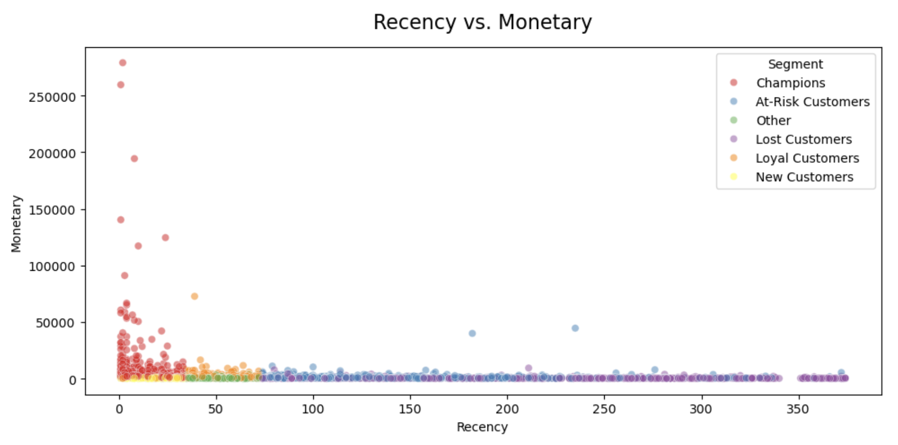
Champions are our most valuable customers: they have purchased recently, purchase frequently, and spend the most overall. In this chart, they are concentrated in the lower-left area (low recency) with relatively high monetary values.
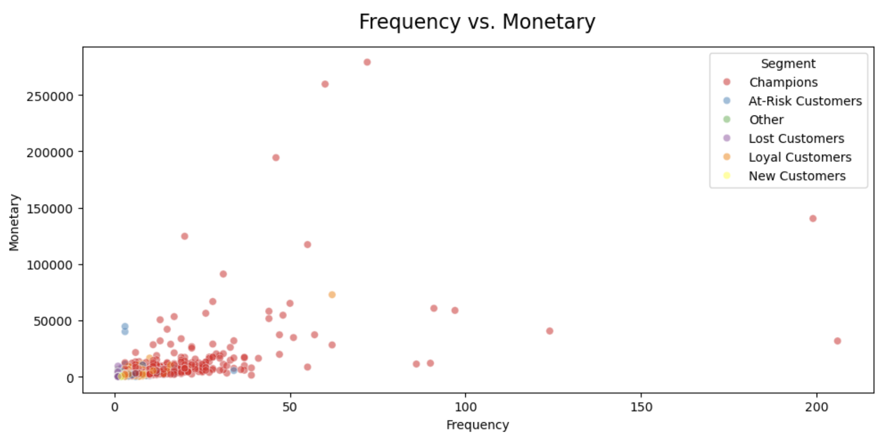
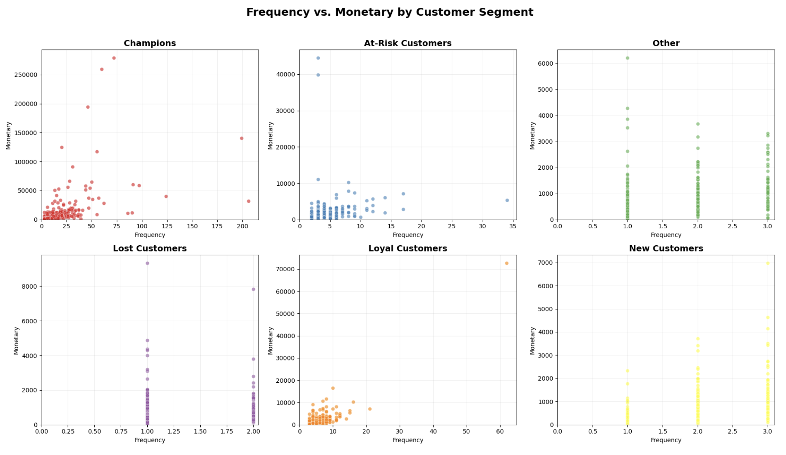
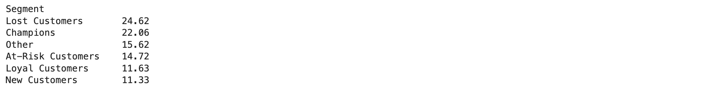
The Champions segment has the highest Frequency and Monetary scores. It represents 22.06% of customers in the combined segment and accounts for 67.2% of total customer revenue.
Customer Retention Analysis
What percentage of customers in each cohort return to make another purchase over time after their first purchase?
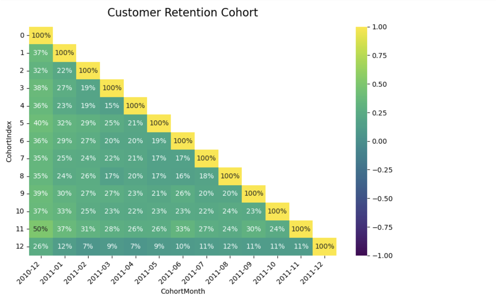
For the December 2010 cohort, 37% of customers made another purchase in CohortIndex 1 (the following month), while 32% made another purchase in CohortIndex 2. Retention fluctuated over time, reaching a peak of 50% at CohortIndex 11, before declining to 26% at CohortIndex 12. However, CohortIndex 12 represents partial observation data, so the 26% rate should be interpreted with caution. Overall, this indicates that customer retention did not consistently decline over time, but instead fluctuated throughout the observation period, potentially reflecting seasonal purchasing patterns.
Across the other cohorts, excluding CohortIndex 12 due to incomplete observation, retention rates were generally lower, ranging from approximately 15% to 40%. This suggests that repeat purchasing was relatively modest across most customer cohorts, with a substantial proportion of customers not returning in subsequent months.
Key Insights
What did the analysis reveal?
- Revenue fluctuated throughout the analyzed period, reaching its peak in mid-November 2011.
- The United Kingdom generated the highest revenue among the countries analyzed.
- The top 10 products generated approximately $819K in revenue, representing 8.19% of total sales revenue.
- A relatively small group of customers from the top 10 countries contributed a significant share of total revenue, indicating that revenue was concentrated among key markets.
- 22.06% of customers belonged to the highest-value RFM segment, Champions, and accounted for 67.2% of total customer revenue.
- The top 40 highest-spending customers, representing only 0.92% of total customers, generated 31.91% of total revenue, demonstrating a high concentration of revenue among a very small customer group.
- Customer retention fluctuated across cohorts, with the highest observed retention occurring at CohortIndex 11. This coincided with the peak in monthly revenue in November 2011, suggesting that stronger customer retention may have contributed to the higher revenue observed during this period.
Business Recommendations
- Retain high-value customers — Target Champions and other high-value customers showing declining recency with proactive retention campaigns.
- Reactivate inactive customers — Use personalized promotions and incentives to encourage customers to make another purchase.
- Protect top-product revenue — Maintain consistent inventory availability for high-revenue products and monitor potential stockout risks.
- Localize market strategies — Develop country-specific strategies based on revenue contribution and purchasing behavior.
- Personalize marketing — Tailor campaigns and offers to customer segments based on their value and purchasing patterns.
- Grow customer value — Identify customers with potential to move into higher-value segments and target them with appropriate upselling and engagement strategies.
Tools Used
| Tool | Purpose |
|---|---|
| Python | Data cleaning, transformation, and analysis |
| Pandas | Data manipulation and aggregation |
| Seaborn | Statistical visualization |
| Matplotlib | Data visualization |
| Jupyter Notebook | Analysis and experimentation |
| Excel | Dataset inspection and validation |
Skills Demonstrated
- Data Cleaning
- Exploratory Data Analysis (EDA)
- Data Visualization
- Data Analysis
- Pandas Library
- Seaborn Library
- Matplotlib Library